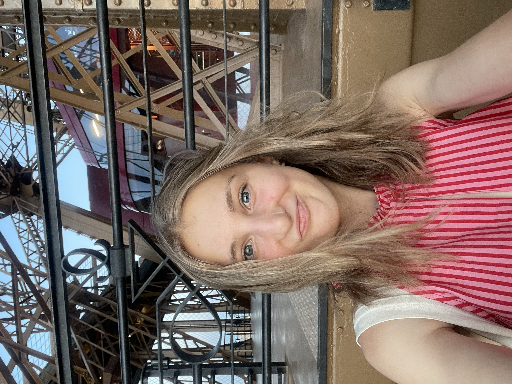

À PROPOS
Une expérience, un parcours, et beaucoup de curiosité.

QUI SUIS-JE ?
Hello, moi c’est Montaine 👋
J’ai 19 ans et je suis actuellement chargée de production événementielle à la Région Pays de la Loire pour une durée de deux mois.
Ce stage s’inscrit dans la continuité de ma première année de Bachelor Cheffe de Projet Événementiel à ISEFAC Bachelor à Nantes.
Parce que la théorie c'est sympa, mais mettre à l'œuvre nos connaissances et compétences au service d'une activité que l'on aime, c'est clairement la partie qui fait le plus évoluer.
L'événementiel est un domaine vaste qui prend une autre dimension sur le terrain, et qui mérite d'être vécu dans la vraie vie.
Et en bonus ? J’ai la chance d’évoluer au sein d’une équipe aussi bienveillante qu’accueillante… avec une mention spéciale pour les gâteaux régulièrement apportés au bureau 🍰
À travers ce blog, j’ai envie de partager cette expérience telle que je la vis : les découvertes, les défis, les moments marquants et tout ce qui fait le quotidien d’un stage dans l’événementiel.
Bref, je ne vous en dis pas plus, et je vous laisse découvrir tout ça dans mes Chroniques Ligériennes.
À bientôt,
Montaine
MON PARCOURS
De la théorie au terrain
ISEFAC Bachelor
Première année de Bachelor Cheffe de Projet Événementiel à Nantes.
Région Pays de la Loire
Stage au sein du service événementiel de la Direction de la Communication.
Une immersion professionnelle
Des projets, des événements, des supports de communication et une première expérience concrète dans le monde professionnel.
ET MAINTENANT ?